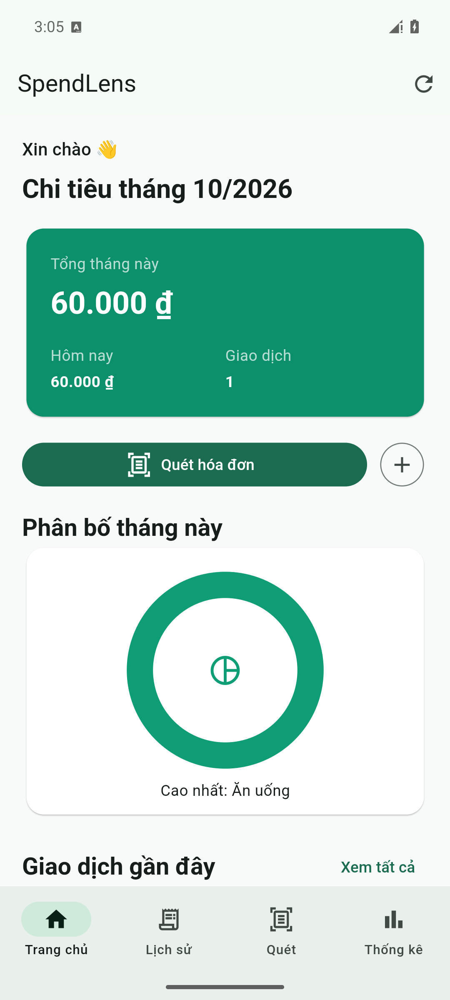
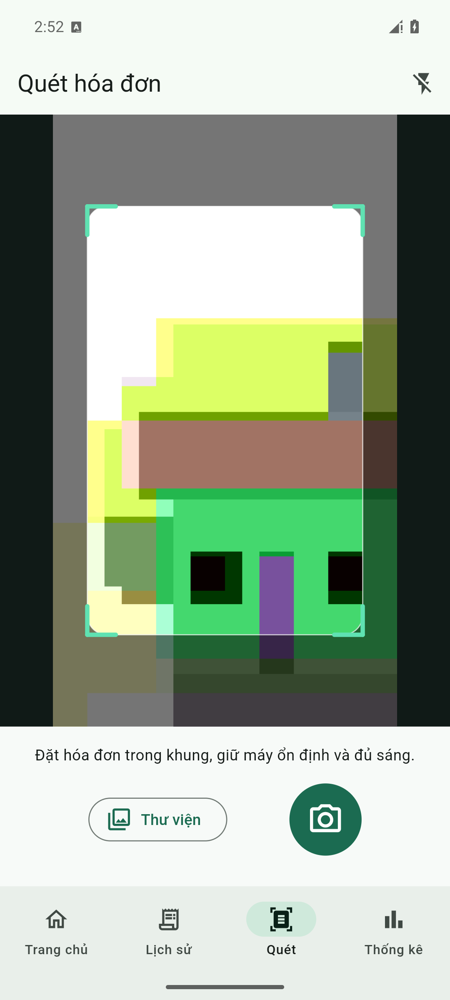
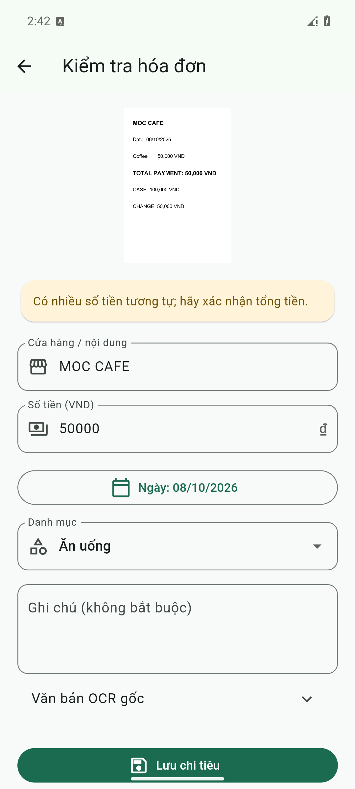
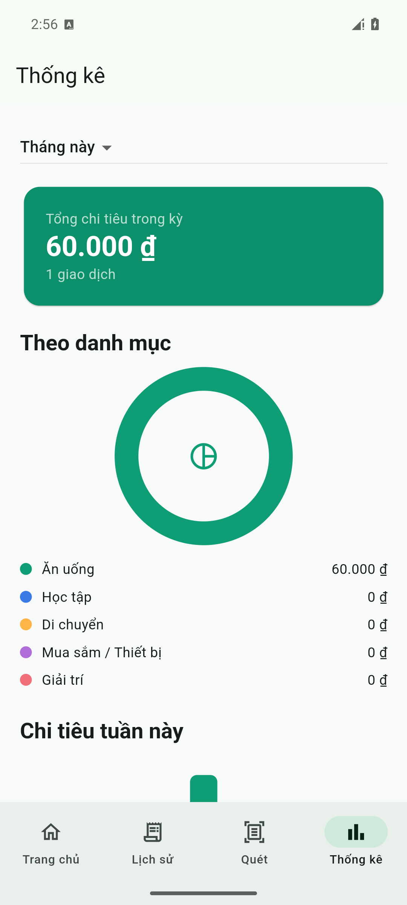

Mini Project 3 · OCR Expense Tracker & Receipt Parser
Báo cáo kỹ thuật · 08/10/2026
Nhập chi tiêu từ hóa đơn giấy mất thời gian và dễ sai. SpendLens cho phép chụp hoặc chọn ảnh hóa đơn, nhận diện chữ ngay trên thiết bị, gợi ý cửa hàng, tổng tiền và ngày; người dùng kiểm tra trước khi lưu vào SQLite.
Flutter 3.22.1, Dart 3.4.1, Google ML Kit Text Recognition, camera, image_cropper, sqflite, Riverpod và CustomPainter. Giao diện Material 3 tiếng Việt, dùng VND nguyên.
| Chức năng | Kết quả xác minh |
|---|---|
| Camera, thư viện ảnh, crop/xoay | Đã chạy trên Android emulator API 35; chụp ảnh, nhập qua Photo Picker và crop thành công. |
| OCR và parser | ML Kit đọc được ảnh hóa đơn tổng hợp khi tắt Wi-Fi/dữ liệu di động; parser trích xuất cửa hàng, 50.000 ₫ và ngày 08/10/2026. Có cảnh báo và form sửa. |
| SQLite CRUD | Đã thêm thủ công và qua OCR, sửa, xóa, mở lại ứng dụng vẫn còn dữ liệu. |
| Dashboard và thống kê | Donut/bar chart CustomPainter hiển thị dữ liệu SQLite và cập nhật sau khi sửa/xóa. |
| Tìm kiếm/lọc/sắp xếp | Đã triển khai trong màn hình lịch sử; chưa kiểm thử đủ mọi tổ hợp bộ lọc. |
Ảnh và giao dịch nằm trong vùng lưu trữ riêng của ứng dụng. Luồng OCR không gọi server; không có Firebase, tài khoản, cloud OCR hay cloud analytics.
Widget điều hướng và hiển thị; service xử lý OCR, parser và file ảnh; repository quản lý SQLite; Riverpod cấp trạng thái cho các màn hình. OCR chỉ chạy sau khi người dùng xác nhận ảnh.
Bảng expenses chứa id, merchant, amount, date, category, note, image_path, thumbnail_path và raw_ocr_text; có index theo ngày. Ảnh hóa đơn được sao chép vào thư mục riêng của ứng dụng, thumbnail dùng trong lịch sử.
DonutPainter tổng hợp theo danh mục trong kỳ; BarChartPainter tổng hợp theo thứ trong tuần hiện tại. Dữ liệu đến từ SQLite qua Riverpod. Biểu đồ có animation hữu hạn và tương tác chạm.
Ảnh chụp trực tiếp từ APK chạy trên Android emulator API 35. Màn Review dùng ảnh hóa đơn tổng hợp trong test fixture.

Dashboard
Camera
OCR Review
Analytics| Kiểm tra | Kết quả |
|---|---|
| flutter pub get / flutter analyze | Thành công / không có issue. |
| flutter test | 22/22 ca pass: 18 parser và 4 SQLite repository. |
| flutter build apk --release | Thành công; APK 91,7 MB, debug-signed cho demo nội bộ. |
| Android emulator API 35 | Camera, crop, OCR offline với fixture, CRUD và lưu qua khởi động lại đã chạy. |
Ứng dụng Android chạy được, tích hợp luồng từ ảnh đến giao dịch SQLite và thống kê. OCR trên emulator nhận diện văn bản trong ảnh mẫu khi mạng bị tắt. Parser có 18 ca và SQLite repository có 4 ca kiểm thử tự động; giao diện hỗ trợ nhập tay nếu OCR không nhận được chữ.
Thử trên điện thoại Android với nhiều hóa đơn thật đã che thông tin cá nhân; kiểm tra quyền camera từ chối, ảnh mờ và bộ lọc lịch sử; ghi thời gian OCR theo thiết bị; quay video demo 2–3 phút; ký release APK bằng keystore riêng nếu phát hành.
| Tệp | Vị trí |
|---|---|
| Mã nguồn và hướng dẫn | github.com/maichiphuoc/mini_project3, README.md |
| Android APK | GitHub Releases: v1.0.0-demo |
| Ảnh và kịch bản demo | docs/screenshots/, docs/DEMO.md |
| Báo cáo | docs/report.pdf |
Chưa có template báo cáo chính thức; cần đối chiếu với template của môn học nếu được cung cấp.